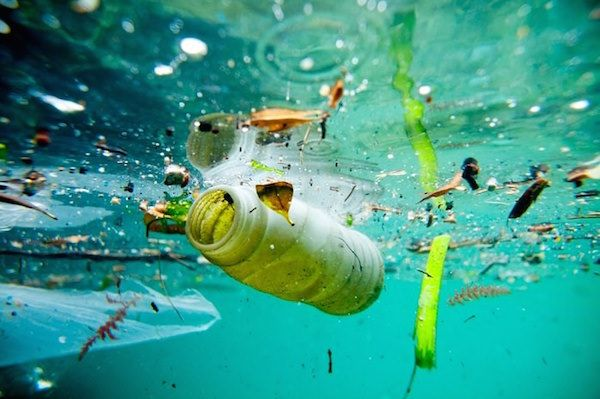
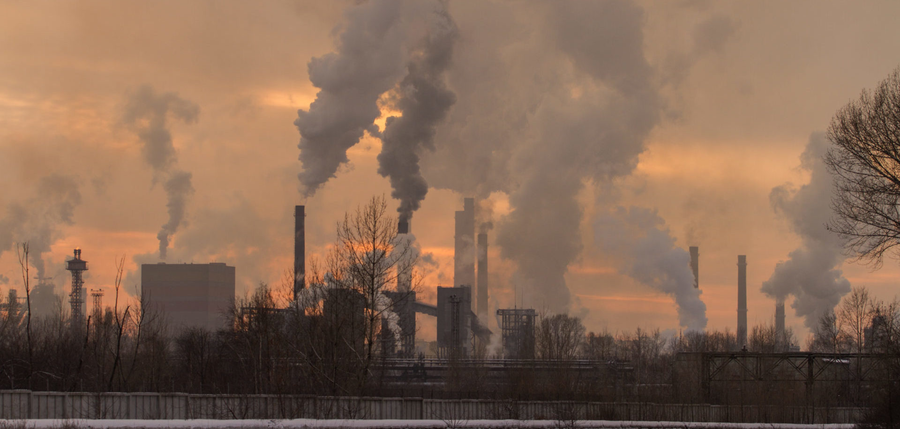
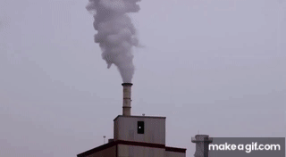

La contaminación del aire y del agua son crisis ambientales interconectadas causadas principalmente por actividades humanas como la quema de combustibles fósiles, residuos industriales y escorrentía agrícola. Estos contaminantes —como el carbono negro y químicos tóxicos— no solo deterioran ecosistemas, sino que causan millones de muertes prematuras por enfermedades respiratorias y cardiovasculares.



La contaminación del agua es la alteración de su composición natural por sustancias físicas, químicas o biológicas (vertidos industriales, plásticos, residuos agrícolas), lo que la vuelve tóxica, insalubre e inservible para el consumo humano y el ecosistema. Degrada la calidad del agua, destruyendo la biodiversidad y propagando enfermedades.
La contaminación del aire es la presencia en la atmósfera de sustancias, gases (como dióxido de carbono, óxidos de nitrógeno) o partículas sólidas/líquidas (hollín, polvo) en concentraciones lo suficientemente altas como para dañar la salud humana, la vida vegetal/animal, los ecosistemas y los monumentos. Esta mezcla tóxica proviene principalmente de actividades humanas como la quema de combustibles fósiles, la industria, el transporte y la agricultura.
